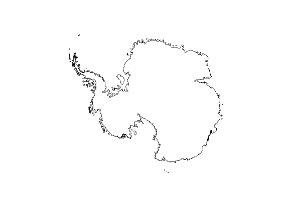
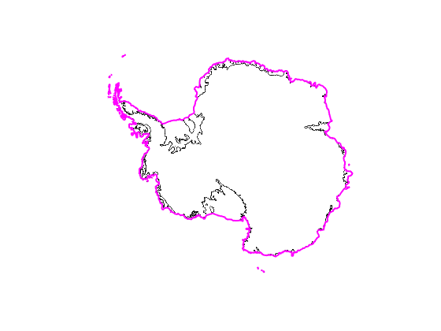
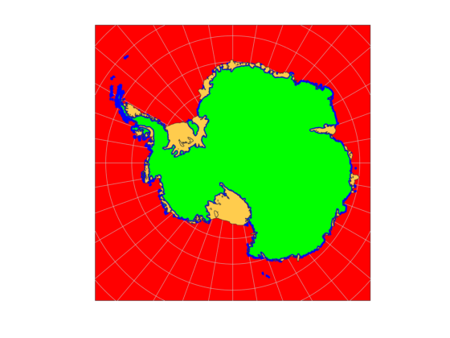
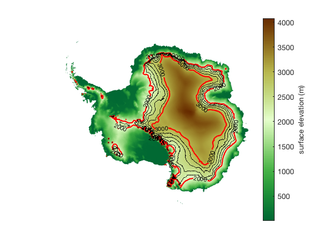
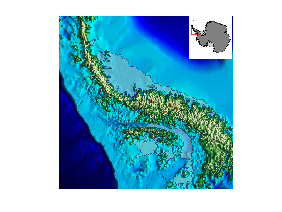
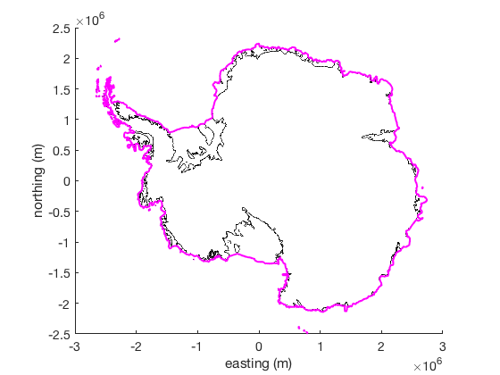

bedmap2 plotting function
The bedmap2 function uses simple commands to plot Bedmap2 data. If you have Matlab's Mapping Toolbox, data are plotted in georeferenced coordinates. If you do not have the Mapping Toolbox, data are automatically plotted in polar stereographic coordinates.
An overview of Bedmap2 functions for AMT can be found here.
Contents
Requirements
This function requires The Antarctic Mapping Tools package available here.
Installation
No installation necessary, just make sure you download the Bedmap2 data and Antarctic Mapping Tools. For details see the bedmap2_download script.
Syntax
bedmap2('mapvar')
bedmap2(...,'PropertyName',PropertyValue,...)
bedmap2(...,'res',ResolutionKilometers)
bedmap2(...,'xy')
bedmap2(...,'z',zvals)
bedmap2(...,'colorbar','ColorbarLocation')
bedmap2(...,'frame','on')
bedmap2(...,'rotation',RotationDegrees)
bedmap2(...,'oceancolor',ColorSpec)
[h,cb] = bedmap2(...)Description
bedmap2('mapvar') plots a continent-wide map of 'mapvar', which can be any of the following Bedmap2 variables:
- 'gl' outlines grounding line with optional linestyle arguments.
- 'patchgl' creates patches for the 200 largest grounded regions.
- 'shelves' outlines ice shelves with optional linestyle arguments.
- 'patchshelves' creates patches for the 200 largest floating ice shelves.
- 'coast' outlines Antarctica's coast line with optional linestyle arguments.
- 'patchcoast' creates patches for the 70 largest coast-bound regions.
- 'thickness' plots ice thickness with pcolorm, (units: m).
- 'bed' plots bed elev. with pcolorm, (m relative to gl04c geoid).
- 'bedw plots bed elev. with pcolorm, (m relative to wgs84 ellipsoid).
- 'bedc' contour map of bed elevations given by zval (gl04c geoid).
- 'bedcw' contour map of bed elevations given by zval (wgs84 ellipsoid).
- 'surface' plots surface elev. with pcolorm, (m relative to gl04c geoid).
- 'surfacew plots surface elev. with pcolorm, (m rel. to wgs84 ellipsoid).
- 'surfc' contour map of surface elevations given by zval (gl04c geoid).
- 'surfcw' contour map of surface elevs. given by zval (wgs84 ellipsoid).
- 'thickc' contour map of ice thickness given by zvals.
- 'beduncertainty' plots the given uncertainty of bed elevation, (units: m).
- 'geoid' plots surface of Gl04c geoid (z_wgs84 = z_bedmap2 + gl04c)
- 'coverage' binary grid showing distribution of ice thickness data used in the grid of ice thickness
- 'icemask' binary, includes grounded and ice shelves
- 'rockmask' binary indicating presence of rocks
- 'vostok' binary indicating presence of Lake Vostok
- '' Calling bedmap2 with an empty string initializes a map via antmap.
bedmap2(...,'PropertyName',PropertyValue,...) formats line or patch objects (e.g., 'LineWidth','Facealpha',etc.
bedmap2(...,'res',ResolutionKilometers) specifies a resolution for gridded raster data set plotting. By default, resolution is set dynamically using extents of current map if a map is already open. For example, a continent-wide map of bed elevation is downsampled to 5 km by default, but if a map is inialized and zoomed to the extents of a glacier, data may be plotted at 2 km or 1 km resolution. Plotting a continent-wide map of the bed at 1 km takes nearly a full minute for my computer to render, whereas the same geographic extents plotted at 5 km is rendered in 1.1 second.
bedmap2(...,'xy') plots data in polar stereographic xy coordinates with units of meters (true latitude 71 S). By default, if you have a Mapping Toolbox license, data are plotted in georeferenced coordinates. If you do not have the Mapping Toolbox, the 'xy' option is automatically selected.
bedmap2(...,'z',zvals) specifies z values of contours for any of the contour variables (e.g., bedmap2('bedc','z',[200 300]) places contours at 200 m and 300 m elevations. Note: Increasing the number of contour levels will increase processing time.
bedmap2(...,'colorbar','ColorbarLocation') specifies a colorbar location. For example, 'colorbar','north' places a colorbar at the top of a map. Choose 'none' to plot data without a colorbar.
bedmap2(...,'frame','on') places a frame around the map.
bedmap2(...,'rotation',RotationDegrees) rotates view by RotationDegrees from standard projection. Folks who study the Ross Ice Shelf do this often, to put south at the bottom of the map.
bedmap2(...,'oceancolor',ColorSpec) specifies background color of axes; effectively, the color of the ocean when plotting a patch of the continent.
[h,cb] = bedmap2(...) returns handle(s) h of plotted object(s) and colorbar handle cb. If plotted fields are contours, cb is the contour matrix.
Example 1: Outlines
Map a simple grounding line:
bedmap2 gl
 Add a fat magenta coast line:
bedmap2('coast','color','m','linewidth',2)
Example 2: Patches
We'll overlay the following patches on a graticule called by antmap. Plot a green patch around a fat blue grounding line, specify ice shelf face color with an RGB triplet, and make the ocean red:
close all % (closes figure from previous example) antmap('graticule') bedmap2('patchgl','facecolor','g','edgecolor','blue','linewidth',2) bedmap2('patchshelves','facecolor',[1 .8 .3],'oceancolor','r')
Example 3: Surfaces and contours
Here we plot a surface elevation map. Then overlay thick red elevation contours at 2 km and 3 km elevation, and thin black lines every 200 m in between. The 2 km and 3 km contours are labeled.
close all % (closes figure from previous example) bedmap2 surface [h,C] = bedmap2('surfc',[2000 3000],'color','r','linewidth',2); clabel(C,h) bedmap2('surfc',2200:200:2800,'k');
Example 4: Combining AMT tools
If a map is initialized before calling bedmap2, the bedmap2 function loads and plots only data within the range of the map extents. Resolution is automatically chosen to plot somewhat quickly.
In this example we initialize a 1200 kilometer wide map of the Antarctic Peninsula, plot bed elevations as a surface, apply relief shading with shadem, then overlay semitransparent ice shelves. For color, I'm using my rgb function, but you may just as easily enter RGB values of your own.
close all mapzoom('antarctic peninsula',1200,'inset','northeast') bedmap2('bed','colorbar','none') shadem(-18) bedmap2('patchshelves','facecolor',rgb('ice blue'),... 'edgecolor',rgb('cobalt'),'facealpha',.5)
Example 5: No Mapping Toolbox? No Problem!
If you do not have Matlab's Mapping Toolbox, the bedmap2 function will automatically plot in polar stereographic coordinates. If you do have the Mapping Toolbox and you would like to plot in polar stereographic coordinates, include the 'xy' tag like this:
close all bedmap2('gl','xy') bedmap2('coast','xy','color','m','linewidth',2) xlabel('easting (m)') ylabel('northing (m)')
References
If this function is useful for you, please cite the following:
Fretwell, P., et al. "Bedmap2: improved ice bed, surface and thickness datasets for Antarctica." The Cryosphere 7.1 (2013). http://dx.doi.org/10.5194/tc-7-375-2013
Greene, C. A., Gwyther, D. E., & Blankenship, D. D. Antarctic Mapping Tools for Matlab. Computers & Geosciences. 104 (2017) pp.151-157. doi:10.1016/j.cageo.2016.08.003.
Author Info
The Bedmap2 Toolbox for Matlab and supporting documentation were created by Chad A. Greene of the University of Texas at Austin's Institute for Geophysics (UTIG).